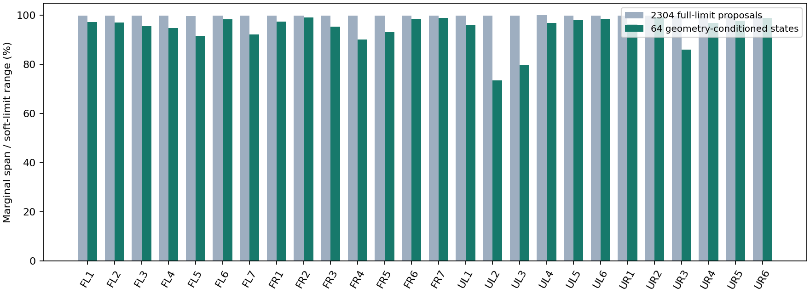
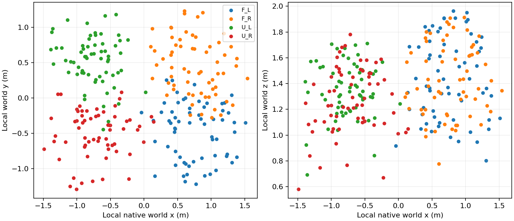

2304
全软限位随机提案
完整数据的条件开发对照；安全策略尚未验收
新种子覆盖四臂全部 26 个臂关节的软限位，随后固定 64 个几何合格初态、随机初速度和随机位置指令。参考与候选各执行 480 个控制步、960 个物理子步，保留六槽延迟队列。固定手部关节、场景与物理参数；这是单个种子的开发对照。
全软限位随机提案
独立新初态，16 格各 4 个
配对方法窗口，每窗 480 控制步
完整原始 PNG，含拒绝视角
参考组物理数据完整：480 控制步、960 微步，82/82 图组合格，实际进程退出 0。Kit 关闭阶段主机内存峰值 46,143 MiB 超过登记的 46,000 MiB，因此原监督记录保持失败。本页使用其完整原始数据做独立核验后的条件开发对照，不算资源政策通过。候选使用逐字段导出与内存回收，沿用同一资源上限、安全门槛、物理参数和随机输入；完整运行实际退出 0、无资源中止，监测主机峰值 43,036 MiB、显存峰值 11,901 MiB，均在原登记上限内。候选完整资源记录。失败记录与完整数据范围。
2,304 个提案中 2,240 个未选入，完整采样账本保留。64 个选入初态中，42 个满足共同前六步的几何与整臂力条件，22 个拒绝仍保留。两方法初始原生状态、参数、随机目标带，以及前六步施加目标和 q/qd 逐字节相同。六步后才比较保护效果。候选修复 1 例，新增失败 0 例；候选仍有失败，不能称安全。
| 方法 | 全部几何失败 | 全部力超限 | 合格子集几何失败 | 合格子集力超限 | 合格子集任一失败 |
|---|---|---|---|---|---|
| 纯随机目标参考 | 31/64 | 43/64 | 20/42 | 21/42 | 25/42 |
| 多行响应候选 | 29/64 | 41/64 | 19/42 | 19/42 | 24/42 |
几何主门槛：全部 9,021 条原始球间隙在宏步边界不得为负，不用豁免过滤。力主门槛：四臂全部 82 个启用碰撞体拥有者，对本环境伙伴的有效逐点法向力绝对值之和不得超过 0.1 N，每个物理微步记录。硬／软限位和速度越界另列于完整状态 JSON；它们仍属于未通过的边界。
硬／软关节限位允许 1e−5 rad 数值容差；速度超限为原生速度比大于 1.0001。下表越界数按共同合格子集计，四臂运动按全部 64 状态计。候选的名义驱动约束不等于真实物理轨迹满足这些约束。
| 方法 | 硬限位越界 | 软限位越界 | 速度超限 | 四臂均实际运动 |
|---|---|---|---|---|
| raw | 8 | 8 | 22 | 64/64 |
| multirow | 4 | 4 | 22 | 64/64 |
候选名义约束通过 0/30720 个下发指令；其中窗口内真正施加的新指令通过 0/30336。同宏步实测不安全、且六步前下发指令名义通过的计数为 0；这是描述性关联，不是单条指令造成失败的证明。整窗待执行队列和 960 微步原生目标值另经逐字节核对。最后六条指令仍排队，未观测超窗响应。
选入初态的 26 关节边际跨度为软限位的 73.5%–99.1%。下表每格表示“共同合格数 / 4；参考失败数 → 候选失败数”。边际跨度与这 16 个单元不能证明 26 维体积充分覆盖。
| 原生速度限值比例 | 0.05 rad | 0.10 rad | 0.20 rad | 0.35 rad |
|---|---|---|---|---|
| 0% | 2/4；0→0 | 3/4；2→2 | 3/4；2→2 | 3/4；3→3 |
| 10% | 3/4；1→1 | 2/4；1→0 | 1/4；1→1 | 4/4；3→3 |
| 25% | 3/4；0→0 | 2/4；0→0 | 4/4；4→4 | 4/4；4→4 |
| 50% | 3/4；1→1 | 2/4；1→1 | 1/4；0→0 | 2/4；2→2 |


加载原生曲线…
橙色：纯随机参考；蓝色：多行候选。横轴为各运行实际原生时钟减初始时钟。曲线是离散采样，不是连续时间安全证书。
采图组 160/160 达到全部四臂视角要求：每臂 3 张原始图，至少两个方位角相差 30°；逐像素实例和语义必须指向同一原生手部连接体，合格像素严格大于 200。六平面球包络仅作取景代理。每次渲染都保存全部 64 个环境的关节、速度、根位姿、连接体、完整目标和原生时钟，并逐字节检查不变。实际微步时钟为 float32 的 1/120 秒，与配置 0.008333 秒有量化差异；时序按原生时钟与步编号核对，原始力保留 API 的配置 dt 换算。每个环境第一次力报警在对应物理微步采图，几何报警另在宏步边界采图。拒绝图像及原因保留。

F_L · 视角 1
qualified · 手部交集像素 70644

F_R · 视角 1
qualified · 手部交集像素 76633

U_L · 视角 1
qualified · 手部交集像素 39585

U_R · 视角 1
qualified · 手部交集像素 8909
第一版接入 35/35 组视觉失败，原始失败证据保留；第二版初态 4 组仍失败并终止，部分报警采图保留；第三版初态预检 4/4 组通过，但完整参考运行在约 430 步被 SIGKILL 中断，且 env34 的 U_R 只有两个合格视角；原始失败保留。GPU1 补拍因渲染后端不支持而终止。打开 env34 的原始视角失败。本轮完整参考数据来自单进程顺序重跑：逐步写盘、主机内存监控，并使用 24 个上方／水平／下方候选和逐像素同一原生连接体匹配。39 项相机 CPU 检查通过；原生图像另由独立脚本核验。第六版审计曾因错误要求每个解除实例化操作前仍为实例而失败：USD 克隆继承使先修改 env0 后，其余环境同轮的待处理路径已变为非实例。安装的原生 USD 最小复现已证明这一变化；第七版修订编辑状态判断，并重新核验原始像素、标签、完整状态和时钟，保持所有视觉与物理门槛。两份原始失败报告和原脚本保留，未改写。完整修订与重审记录 · USD 继承复现。env34 在第 27 步／子步 0 的真实力报警重新取得四臂各 3 张合格视角，旧／新全部 64 环境的 27 项原生状态字段逐字节相同；原先 U_R 只有 2 张仍保留为失败。同一原生事件的视角修复核对。视觉合格只证明被观察到的手部像素与取景条件，不证明整网格可见、无碰撞或实际安全。参考组独立核验 · 候选组独立核验。
| 状态／全部图像 | 共同前缀 | 参考最小间隙 mm | 参考峰值 N | 候选最小间隙 mm | 候选峰值 N |
|---|---|---|---|---|---|
| 0 | 合格 | -36.394 | 1334.943 | -35.810 | 1165.513 |
| 1 | 合格 | 1.067 | 0.000 | 1.067 | 0.000 |
| 2 | 合格 | 1.477 | 0.000 | 1.477 | 0.000 |
| 3 | 合格 | 0.106 | 0.000 | 0.143 | 0.000 |
| 4 | 合格 | 0.883 | 0.000 | 0.895 | 0.000 |
| 5 | 合格 | -16.615 | 2030.725 | -16.295 | 2001.757 |
| 6 | 合格 | 0.905 | 1008.494 | 0.923 | 1009.009 |
| 7 | 拒绝，保留 | 0.859 | 16103.748 | 0.859 | 16103.748 |
| 8 | 合格 | -24.533 | 39.656 | -18.933 | 0.000 |
| 9 | 合格 | 0.830 | 0.000 | 0.849 | 0.000 |
| 10 | 合格 | -0.043 | 0.000 | -0.122 | 0.000 |
| 11 | 合格 | 1.287 | 0.000 | 1.288 | 0.000 |
| 12 | 合格 | 0.836 | 1352.911 | 0.845 | 1322.657 |
| 13 | 拒绝，保留 | 1.766 | 24276.385 | 1.769 | 24276.385 |
| 14 | 合格 | -13.559 | 0.000 | -1.196 | 0.000 |
| 15 | 拒绝，保留 | -13.734 | 35823.330 | -3.495 | 35823.330 |
| 16 | 合格 | 1.455 | 0.000 | 1.457 | 0.000 |
| 17 | 合格 | 0.931 | 0.000 | 0.933 | 0.000 |
| 18 | 拒绝，保留 | -39.013 | 1292.680 | -38.075 | 900.347 |
| 19 | 合格 | 0.859 | 0.000 | 0.859 | 0.000 |
| 20 | 合格 | 1.205 | 0.000 | 1.205 | 0.000 |
| 21 | 拒绝，保留 | -15.366 | 516.041 | -14.704 | 816.046 |
| 22 | 拒绝，保留 | -19.680 | 2003.318 | -16.809 | 2003.318 |
| 23 | 合格 | -62.170 | 897.158 | -62.391 | 323.608 |
| 24 | 合格 | 1.368 | 868.288 | 1.357 | 1078.141 |
| 25 | 拒绝，保留 | 1.453 | 16231.873 | 1.457 | 16231.873 |
| 26 | 合格 | -23.073 | 966.748 | -24.684 | 812.669 |
| 27 | 拒绝，保留 | 0.783 | 58251.816 | 0.805 | 58288.591 |
| 28 | 拒绝，保留 | -36.146 | 15540.279 | -34.186 | 15540.279 |
| 29 | 合格 | -44.171 | 2888.130 | -44.284 | 2279.383 |
| 30 | 拒绝，保留 | -38.786 | 13939.389 | -30.529 | 13939.389 |
| 31 | 合格 | -3.463 | 0.000 | -0.924 | 0.000 |
| 32 | 合格 | -26.118 | 1107.941 | -26.760 | 856.564 |
| 33 | 合格 | 1.075 | 602.340 | 1.075 | 977.915 |
| 34 | 合格 | -13.333 | 1154.107 | -8.383 | 778.657 |
| 35 | 拒绝，保留 | 1.341 | 14976.891 | 1.341 | 14976.891 |
| 36 | 合格 | -37.432 | 1431.704 | -33.818 | 1299.715 |
| 37 | 拒绝，保留 | -9.268 | 22758.689 | -11.369 | 22555.374 |
| 38 | 合格 | -23.680 | 49.028 | -23.307 | 158.809 |
| 39 | 拒绝，保留 | -1.196 | 5075.166 | 1.424 | 5075.166 |
| 40 | 合格 | 1.147 | 0.000 | 1.147 | 0.000 |
| 41 | 拒绝，保留 | -34.281 | 7384.091 | -29.006 | 5098.606 |
| 42 | 合格 | 1.184 | 0.000 | 1.194 | 0.000 |
| 43 | 拒绝，保留 | -23.074 | 1233.873 | -23.064 | 1181.507 |
| 44 | 合格 | 1.576 | 0.000 | 1.578 | 0.000 |
| 45 | 拒绝，保留 | 1.194 | 15263.668 | 1.194 | 15263.668 |
| 46 | 合格 | -20.805 | 712.049 | -20.919 | 691.304 |
| 47 | 合格 | 1.534 | 0.000 | 1.534 | 0.000 |
| 48 | 合格 | 1.479 | 0.000 | 1.479 | 0.000 |
| 49 | 拒绝，保留 | 1.304 | 22032.982 | 1.312 | 22032.982 |
| 50 | 合格 | 1.536 | 2044.209 | 1.534 | 1562.751 |
| 51 | 合格 | -8.428 | 0.000 | 1.291 | 0.000 |
| 52 | 合格 | 1.074 | 0.000 | 1.078 | 0.000 |
| 53 | 合格 | 0.910 | 0.000 | 0.912 | 0.000 |
| 54 | 拒绝，保留 | 0.969 | 18666.086 | 0.971 | 18254.626 |
| 55 | 拒绝，保留 | -36.604 | 16479.723 | -34.373 | 16479.723 |
| 56 | 合格 | -30.522 | 2766.921 | -30.846 | 2464.892 |
| 57 | 合格 | -76.763 | 2216.350 | -78.872 | 1926.049 |
| 58 | 合格 | -19.685 | 64.952 | -16.340 | 0.000 |
| 59 | 拒绝，保留 | 1.028 | 1663.658 | 1.028 | 1663.734 |
| 60 | 合格 | -31.911 | 7215.574 | -31.750 | 4311.659 |
| 61 | 拒绝，保留 | 1.339 | 68327.113 | 1.344 | 68327.113 |
| 62 | 合格 | -30.894 | 1405.642 | -30.850 | 1237.653 |
| 63 | 拒绝，保留 | 1.056 | 157489.889 | 1.057 | 157489.889 |
30,720 次候选指令的名义几何速度残差均超过 0.0001；最小值约 0.0965、中位数约 0.1002。速度约束残差另有 12,215 次超限，驱动力残差另有 17,408 次超限，计数可重叠。逐条重构的名义约束标志与原始记录完全一致，满足数为 0。最后六次指令仍在队列中，不能外推它们的实际响应。全部分母、残差分布与逐状态诊断。这是失败标志的描述性复算，不证明物理失败的因果根源；后续运行时回退仍需保持原生六步队列、相同输入和完整整臂验收，当前结果不支持采用。
全部结果和逐状态诊断 · 冻结随机与验收协议 · 原始图像／状态资产 SHA 清单 · 原路径到原始资产映射 · 参考完整曲线数据 · 候选完整曲线数据 · 参考逐点独立复算 · 候选逐点独立复算
显式构造探针的两次物理微步另记录和复算；构造函数内部接触未获完整认证。时钟审计脚本初版错误比较配置步长；修订后按原生 120 Hz 时钟核验。一次早期错误审计 JSON／日志在重跑时被覆盖，精确字节未保留，已记录在 修订历史；原始物理、分割和图像数据保留。全量控制流与逐点流保存在登记的本地目录，公开资产含原始相机像素、分割输出、标签映射、原生状态和初态／随机输入。未覆盖多种子最终留出、物体负载、真实抓取、完整训练策略、摩擦力边界与硬件。